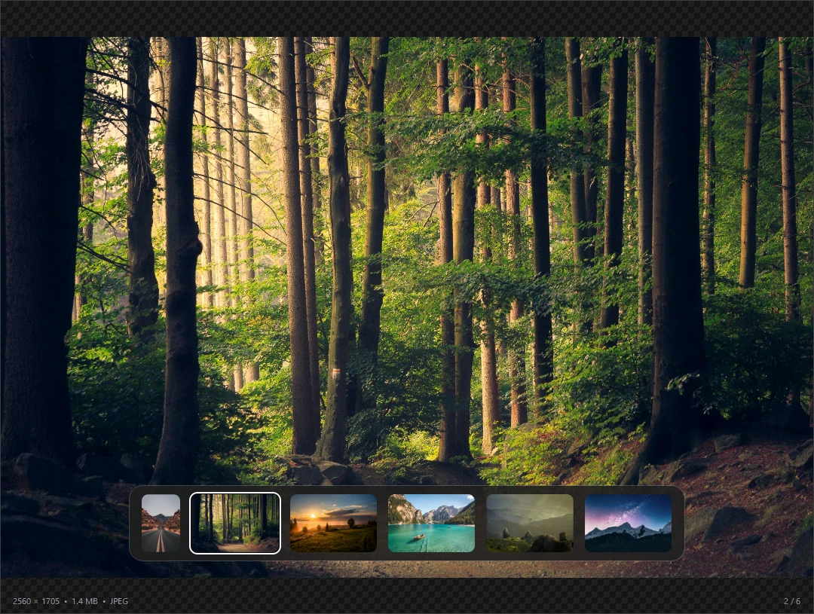

按文件夹翻图
打开一张图片后，可以继续翻看同一文件夹里的其他图片。
打开一张图片后，可以继续翻看同一文件夹里的其他图片。
PNG / JPEG / WebP / TIFF / ICO 之外，直读 RAW 与 HEIC / AVIF，PSD 也能出缩略图。
把画册或漫画的相邻两页并排显示，也可以随时切回单页。
查看照片的拍摄参数和直方图。有 GPS 信息时，可在地图上查看拍摄地点。
用网格浏览文件夹里的照片。双击或按回车打开选中的图片，按 Esc 返回看图。
安装版会在资源管理器中提供缩略图和 QuikView 右键菜单。
支持简体中文、繁体中文、英语、日语、韩语、法语、德语、西班牙语和俄语。
便携版解压后即可运行，配置保存在程序目录。
选择缩略图切换界面，点击大图查看细节。

v0.5.6 · 2026-11-21 · Windows 10 / 11 x64
安装后可在资源管理器中使用缩略图和右键菜单。
下载安装包QuikView-0.5.6-setup.exe
解压后运行 QuikView，配置保存在程序目录。
下载便携包quikview-0.5.6-win64.zip
用 SHA-256 清单核对下载的文件。
下载 SHA-256 清单SHA256SUMS.txt
安装与卸载无需重启。遇到问题请到 Issues 反馈。